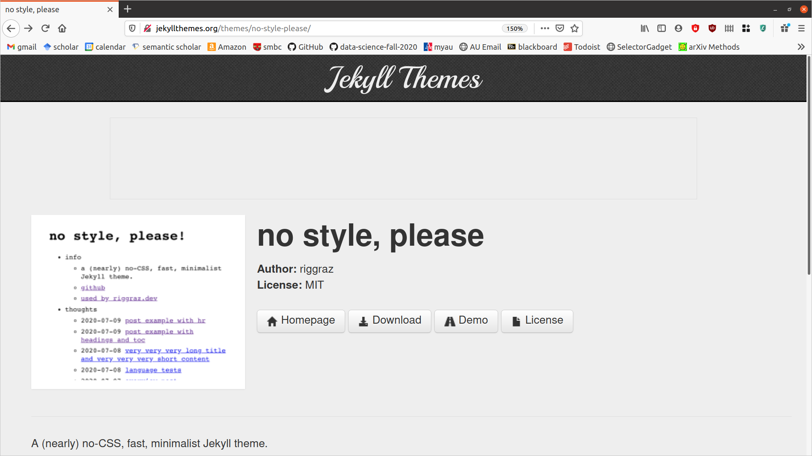
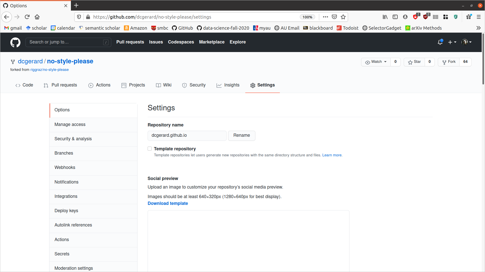
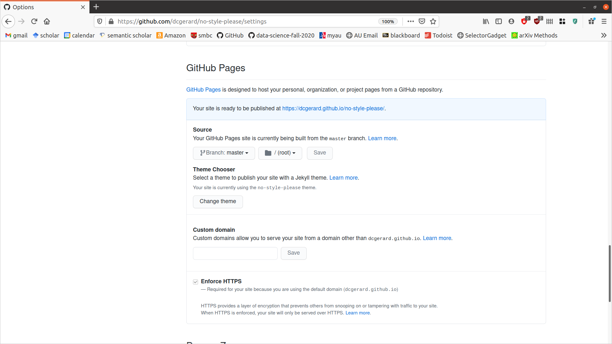
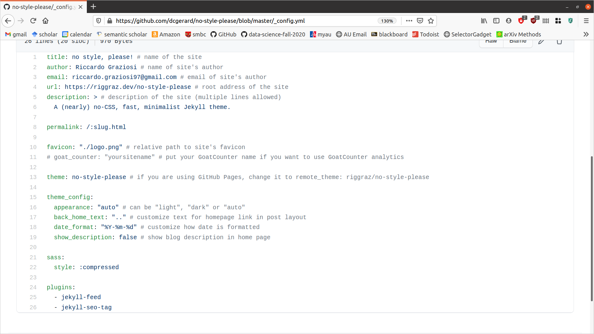
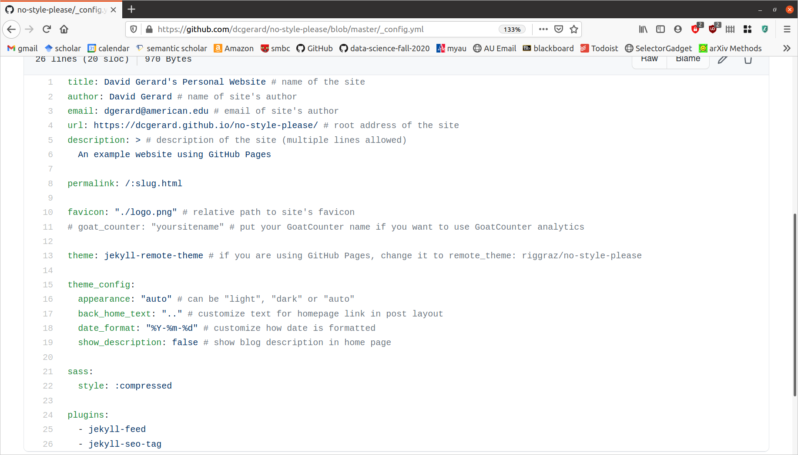

Create your own Website using GitHub Pages
Learning Objectives
- Create your own personal website using GitHub pages.
- Setting up a GitHub Pages site with Jekyll.
- In particular, the pages on adding content and troubleshooting build errors.
- Jekyll Themes
Build your own website
- The easiest way to build your own website on GitHub is to
- Choose a Jekyll theme: http://jekyllthemes.org/
- Click on the “Homepage” button to go to the GitHub page.
- Fork the website to your own repo.
- Deploy your website.
- Edit the source to suit your needs.
Choose a Jekyll Theme and Fork.
We will demo how to create a personal webiste using the
no-style-pleasetheme: http://jekyllthemes.org/themes/no-style-please/
Click on “Homepage” to go to the repo, which is here: https://github.com/riggraz/no-style-please

Go ahead and fork it so that you have a copy in your own account. My fork is here: https://github.com/dcgerard/no-style-please
Make it your homepage
You only need to do the following step if you want this website to be your homepage. You can have non-homepage websites by keeping the repo name as is.
If you want this to be your homepage, then go to
Settingsand change the repository name to “yourusername.github.io”, where “yourusername” is your GitHub username. For example, for me this would be “dcgerard.github.io”/
Deploy your website
In
Settings, scroll down toGitHub Pages, and changeSourceto bemaster. Then clickSave.
When you scroll back down to
GitHub Pages, GitHub will tell you where your website is located. Mine says https://dcgerard.github.io/no-style-please/
You can now head over to that URL to see the website deployed.
Edit your website.
- The websites I am having you build use Jekyll, a static website generator that supports writing websites using just Markdown, which you are used to.
Configuring your website
Most of the configuration settings are in “_config.yml”.
Make sure you use spaces instead of tabs in side “_config.yml”.
Make sure you use a space after
:when setting key-value pairs.Most of these settings are self explanatory, and you can edit them to suit your needs. For example, here is the original “_config.yml” file:

And here is the one I did after I edited it:

More info on Configurations: https://jekyllrb.com/docs/configuration/
Adding content to your website
- The main types of content of a Jekyll website are pages and posts.
- A page contains standalone content not associated with a particular date. For example, the home page, an “about” page, or a license.
- Information on pages: https://jekyllrb.com/docs/pages/
- A post is a blog post, that is associated with a particular date.
- Information on posts: https://jekyllrb.com/docs/posts/
- A page contains standalone content not associated with a particular date. For example, the home page, an “about” page, or a license.
Pages
To add a page, just include a markdown file (ends with “.md”).
This markdown file will be converted to an HTML file when uploaded to GitHub.
Each markdown file has a YAML header (just like in R Markdown files) and what goes into this header depends on the theme you chose. Just look at a few examples from that theme.
- More information on the YAML header: https://jekyllrb.com/docs/front-matter/
You can edit the homepage by editing “index.md”
Posts
All posts go in the
_postsdirectory. These are also markdown files (ends in “.md”). Your theme will have a default way of displaying posts on the homepage that I would not mess with until you get more experience.All posts should be titled with the following format:
YYYY-MM-DD-title.mdThe theme will generally display links to these posts in reverse-chronological order.
All posts will again have a YAML header. Just look at a few examples from the theme for what should go there.
- More information on the YAML header: https://jekyllrb.com/docs/front-matter/
Troubleshooting Build Errors
See here for helpful hints on fixing build errors.
GitHub will send you an email if your website fails to build. Go to the above link and scroll through the types of errors to see hints on where to look for the error in your source.
My Website
- After playing around with the source, this is what I came up with: Which I think looks pretty good!